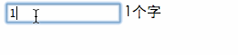

要实现的效果：

$(function(){
var input=$("#js_input");
function getNum(){
return input.val().length;
}
function render(){
var num=getNum();
var input_count=$("#js_input_count");
if(input_count.length==0){
var str=''+num+'个字';
input.after(str);
}else{
input_count.html(num+"个字");
}
}
input.on("keyup",function(){
render();
});
render();
})
缺点：各种变量混乱，没有很好的隔离作用域,当页面变的复杂的时候,会很难去维护
var textCount={
input:null,
init:function(config){
this.input=$(config.id);
this.bindEvent();
return this;
},
bindEvent:function(){
var that=this;
this.input.on("keyup",function(){
that.render();
});
},
getNum:function (){
return this.input.val().length;
},
render:function(){
var num=this.getNum();
var input_count=$("#js_input_count1");
if(input_count.length==0){
var str='<\span id="js_input_count1">'+num+'个字';
this.input.after(str);
}else{
input_count.html(num+"个字");
}
}
}
textCount.init({id:"#js_input1"}).render();
缺点：这种写法没有私有的概念，比如上面的getNum,bind应该都是私有的方法。但是其他代码可以很随意的改动这些。当代码量特别特别多的时候，很容易出现变量重复，或被修改的问题